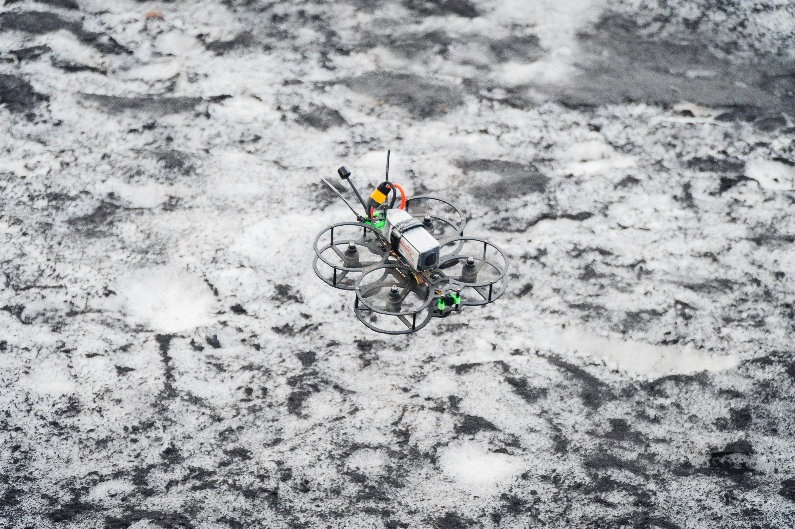

Physics & Control
FPV flying involves a video feed
coming black from your aircraft to whatever device you are using to display your video.
Subsequently, you will have video flowing both ways - from your radio on the drone to the goggles or
screen for the video. Click here to learn more about the parts and equipment needed to fly FPV.
For the connection between the radio and the RC control to work properly, you need to understand
what exactly is going on between the two devices (e.g the frequencies used and how to avoid
problems.) The last thing you need is your drone losing connection with your controller and
therefore crashing!
Esentially an FPV drone requires two subsystems, a video system and a control link system, in order
for a pilot to fly.
In terms of drone physics, the motors on the quadcopter act like wings on a plane.
They create lift by rotating at fast speeds, which
pulls the air downwards and pushes the quadcopter
drone in the air.
If the lift cancels out with the acting force of
gravity, then the net force becomes zero and the quad
hovers in midair.
A directional thrust makes the quadcopter to move in
that direction.
There are 4 main axes in which one can control a drone, by using the radio transmitter:
- Roll: Moving to left or right with respect to the front of the drone.
- Pitch:Moving the drone forward or backwards.
- Yaw: Pivoting or turning from the left or right. (The drone rotates around the center.) ...and last but not least...
- Throttle: Moving the drone up and down
The following is a image to demonstrate these axes of movement: